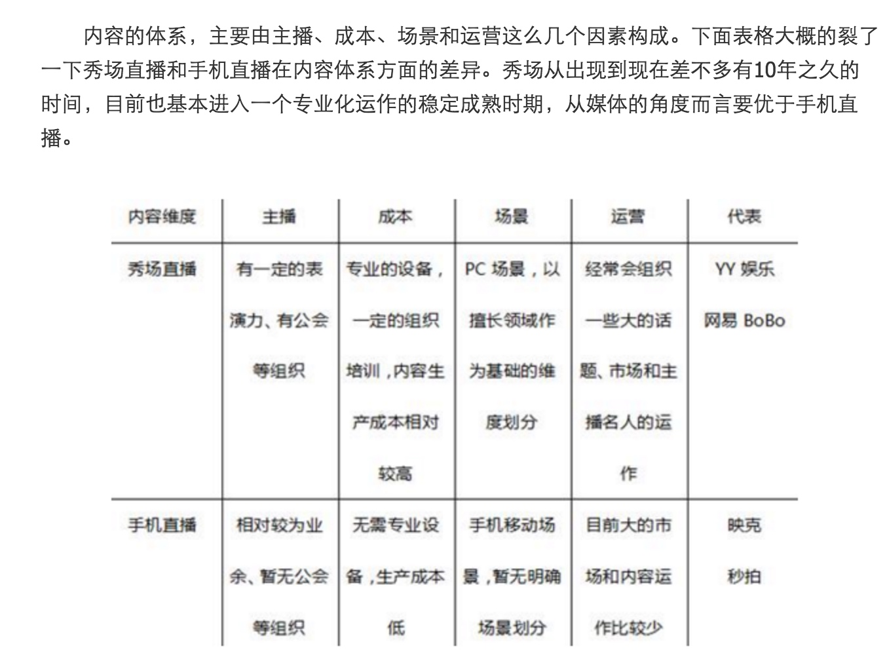

首先，一定是抓住了手机直播本质的玩家，手机直播的本质是媒体，不是社交。这个观点和我曾经在做短视频分享社区时就明确提过，文字、图片、音频和视频，这四大媒介中，视频的媒体属性是非常强劲的，过去微视没有足够的把握到这个本质，一直以为是在做一个社交产品，结果忽略了内容的建设被美拍给打下去。
其次，既然确定了手机直播的本质为媒体，那么决定一个媒体产品的好坏就在于内容是否优质，无论是UGC和PGC。我的观点是，在中国不存在纯粹的UGC，最终取胜的一定是PGC或者说是那Top1%的UGC。因此，能不能持续稳定的提供优质的内容体系是直播（秀场）能否成功的关键。

另一个观点
手机视频直播的本质是社交，主播和观众可以实时互动，实际上是人与人通过视频直播的形式进行社交行为。从twitter到Instagram，移动互联网的社交方式经历了文字为主到图片为主，Meerkat的火爆也很大程度上依赖于twitter这个社交平台，以致于最后twitter为了保护自己投资的Periscope，封锁了Meerkat的好友关系链。Meerkat为了应对twitter的封锁，开始建立自己内部的社交关系，引入Facebook的社交图谱，还增加了导入通讯录的功能，这一系列举动的实质都是为了给Meerkat注入更多社交元素。
http://tech.qq.com/a/20160331/027294.htm
我们可以得出两个Meekat放弃直播业务的两大关键原因：
1）很难取得大规模的用户增长优势；
2）很难获得持续稳定生产直播内容的主播。
流量和内容

直播这个行业，最近真是越来越热，不但有小米直播横空出世，连腾讯都连续推出了腾讯直播和企鹅直播两款app，并同时投资了斗鱼直播和龙珠直播，加上之前大火的映客花椒17等等，不得不令人感慨：风，又来了。
当一个新兴行业，出现初创企业和巨头比翼齐飞的场景时，意味着这个行业最热闹的时刻马上就要来临了。
1. 直播行业的发展中有哪些规律？
但热闹永远是一时的，残酷的商业世界的本质注定了一个行业不会有太多的玩家一直存活下去。好比当年团购在疯狂的千团大战之后，留下的也就只有美团、点评和糯米几家。那么问题就来了，什么样的直播产品有更大的机会笑到最后？
关于直播行业的发展规律，我在过去的文章里曾经提到过两个关键点：
第一，就是秀场类直播会很危险，因为它的商业模式已经看到了天花板。YY最新公布的2015Q4的财报，净利润同比已经下降了4%。在线秀场这个行业经过多年的发展，竞争白热化，不但饱和了，而且是饱和多年了。所谓物极必反，虽然我认为现有的秀场类产品依然会在相当长的一段时间内继续存在，并且赚到一些钱，但整体是在走下坡路的。
第二，就是已经拥有了用户的关系和场景的大平台，再做直播会比较有优势。典型的比如微博和陌陌，微博上天然就有粉丝围观大V的娱乐生态，而陌陌上则有陌生人之间相互发现的社交需求。这两个平台接入直播类产品后，会极大丰富自己主流程的深度，并且也和自己的产品定位也是符合的。加上他们原有的用户量的优势，不管是初期的上量和还是后期的场景拓展，都会比白手起家的直播类App容易很多。
2、背靠平台的直播类产品都有哪些优势？
由此我们可以看到，在直播领域，秀场模式虽然依旧算是一颗摇钱树，但不是未来。而移动直播类产品可能更适合一些大的平台来做，因为直播这种形式的本质就是一个工具，它必须搭载合适的关系和场景，才能让在此工具上生产出来的内容被最大效率地传播和消费。
因此，直播类App本身并不具备成为平台的可能，背靠有关系和场景的平台可能才是最好的选择。
（一些巨头推出的直播类app）
而大的平台在考虑做直播的时候，一定不像如映客这一类app从单纯的直播场景来考虑，肯定是要和自己原有的业务做联动的。
比如小米做直播，我觉得雷军肯定不会只想单纯的做个直播app就完事了，不然也用不着亲自出来站台了，他一定是考虑和自己的小米手机以及其他硬件有协同，从丰富小米生态的角度出发的。
下面介绍几个我观察到的平台和它们的直播产品结合得比较好的的案例：
1、微博和一直播：追星
前面提到了，微博上天然就有粉丝围观大V的娱乐生态，而这个娱乐生态的本质就是追星了。
其实追星是个很泛化的事情，每个人其实都是关注明星的动态的，特别是娱乐明星。我们不光只是看他拍的电影和电视剧，也天然希望知道他的日常生活是什么样的，这在心理学上称为窥私欲，也就是八卦心态了。只不过这样的心态每个人的程度有深浅之分，有的人偶尔看一眼新闻，有的人愿意跑到机场去接机。
互联网诞生之后，打破了“信息”在时间和空间上的限制，为人和人之间的沟通架起了天然的桥梁。微博就打通了明星和粉丝之间的信息沟壑，让明星和粉丝之间的互动变得非常直接。但在过去，通过文字和图片的形式，这种互动虽然几乎零距离，但却仍然是异步的。
现在有了直播以后，明星可以随时随地用直播来分享自己的近况，上飞机前，化妆中和晚会上台前，这些场景都是极好的移动直播场景，而且天然就是让粉丝感兴趣的内容。
其实，我倒并不担心微博的直播推不起来，我比较关注的点是，文字图片曾让留几手等人火了，短视频（录播）让papi酱火了，微博的直播能让谁火起来？
陌陌和哈你直播：交友
用户上陌陌的需求，本质上是“相互发现的社交需求”，翻译成白话就是：交朋友。
但是，原本在陌陌上的陌生人社交，就非得通过文字、图片和语音才能完成吗？非也！与文字和图片相比，视频直播具有更丰富的内容及更令人激动的实时性，移动视频直播带来更多社交玩法的同时，也改变了人与人之间的交流方式，并成为多维度展示自己并建立社交关系的新途径。
也就是说，陌陌上的直播，可以不再只是秀场主播的那种展示才艺获取打赏的模式了，也不只是移动场景下各类吃喝玩乐的实时直播，它还也可以一个人成为结交新朋友的方式之一。
从文字、表情、语音、图片、视频到直播，从静态到动态，一路走来，媒介的千变万化其实只是表象，背后的用户需求才是我们真正应该去把握的。
从用户的角度来说，越来越多的90后甚至00后开始用视频这种形式表达自我。这与新一代网民的特质息息相关，不管是录播还是直播，新一代用户在媒介的选择上都更加丰富，也更加大胆。他们更强调表达自我，他们会觉得仅仅是文字和声音是不够的，太闷骚了，无法表达出他们真实的心声。
优酷土豆和来疯直播：娱乐
用户上优酷一般是来消费视频类内容的，本质上，这是一种泛娱乐的需求。
来疯直播是优酷推出的直播类产品，前两年主打秀场直播，在优酷的首页有好几处入口。一开始我觉得视频点播和秀场直播是两码事，强行结合在一起有些不妥。但后来马上发现，除了一部分认准某个节目才上视频网站观看的用户，大部分上视频网站的用户本身就有着娱乐的需求，其实对秀场并不排斥，因为他们就是上来随便看看的。
与此同时，优酷的视频点播模式，由于巨大的成本因素（带宽+版权），导致即使和土豆合并后也迟迟未能盈利。但秀场模式赢利点清晰，来疯反倒活得很不错，虽没有挑战YY老大位置的机会，但2015年也实现了7倍增长。
不过在移动直播这一块，优酷除了能给它的直播产品带来流量和用户以外，更重要的还有综艺娱乐方面的资源。今年来疯上线了全民直播的版本，估计就是准备把优酷土豆的综艺娱乐的节目资源最大化的利用起来，为什么？因为优酷土豆手里，有大量的综艺娱乐节目的资源：在花了重金购买到这些资源以后，如何将这些资源的利用效率最大化，就成了全公司的第一要务了，而直播这种新形式的出现，恰好对其在综娱资源的利用效率上形成了完美的补充作用。
举个例子，优酷之前和韩国SBS电视台合作的韩秀榜，是一款中韩音乐人打榜类节目。我们知道，一般传统的电视台节目，本身已经是一个完整的内容了，优酷只是被作为一个播出渠道来对待的。这些参与比赛的艺人，原本在每期比赛后经过剪辑的视频中才有出现的机会，不在现场的粉丝也只有通过观看视频才能看到他们。
但有了直播以后，这种情况被改变了。通过直播这种形式，节目中的艺人被最大效能的利用了起来，他们可以通过直播来和粉丝互动，为自己拉票，营造更高的人气，用户在来疯上给艺人的礼物可以算作投票给自己喜欢的艺人，对艺人最后在榜单上的排名是有决定性影响的，甚至至能在关键时刻决定艺人是否有机会被复活。
3、平台们对直播行业的影响可能会非常彻底
在直播这件事情上，我觉得平台们自己做直播的动机无外乎有这么几个：
- 扩大产品主场景的边界：比如陌陌，他上面的陌生人社交场景，被直播给丰富起来了；
- 提高用户在线时长：比如微博，文字和图片一会就看完了，直播能看好久呢；
- 充分利用好自己的资源：比如优酷，它的来疯能够把自己重金买下的综娱资源充分调动起来。
巨头们的进入，对行业来说，总是喜忧参半。如今的创业，只要这个行业一火起来，绝不可能再像以前那样安安静静的发展壮大了。团购行业拼了六年，也只是留下一家不得不合并点评的美团继续独自搏杀，剩下的百度糯米和口碑，都已经是巨头家的产品了。甚至我们可以认为，由于有过腾讯的大笔投资，新美大就是腾讯家的，团购行业最终成了BAT打架的战场。好比之前的滴滴和快的，只不过是微信和阿里在移动支付领域争夺的棋子罢了。
像映客这样独立发展起来的直播产品，虽然撬动了全民直播的热闹场面，但商业模式和盈利前景还不明晰，巨头们的同步进入，一定会搅乱它的发展节奏。现在来看，百度虽然之前通过贴吧做过一些秀场业务，但陷入公关危机的它可能还没有精力来做直播。 腾讯已经自己做和投资了好几家直播app，360已经投资了花椒，而阿里在直播领域的代言人，很可能就是之前刚刚被它完全私有化的优酷旗下的来疯了。
不过，前面讲的更多的还是巨头通过投资的方式进入一个行业，影响了其整体的格局。巨头如果选择自己做，而本身的基因并不合适的话，结局悲剧的概率很大。比如腾讯也曾自己做过团购，后来破产收场。要像腾讯做成微信，新浪做成微博，阿里做成支付宝一般，在原来的主力产品成功之外再延续第二春，其实还是有一定规律可寻的。
我坚持认为直播这个行业，它的特性应该是天然注重娱乐的，并且在有相应的关系和场景的平台上发展，才会有比较大的成功概率。比如腾讯也是娱乐的，但腾讯的娱乐主要是游戏，所以它投资了斗鱼直播和龙珠直播两个主打游戏直播的平台也显得十分理所当然。优酷也是娱乐的，但优酷的娱乐主要是综艺娱乐节目，所以他们扶持自家的直播产品来疯也是水到渠成的事情。